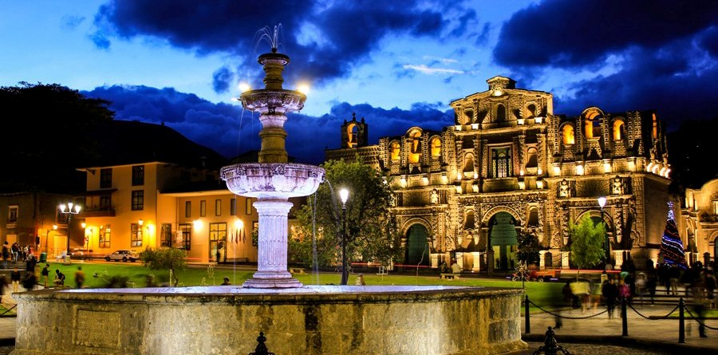

BAÑOS DEL INCA
Uno de sus atractivos es el balneario de Pultumarca, lugar en que se dice que el inca Pachacútec se aseaba y tomaba relajantes baños. Según los historiadores, fue en este mismo lugar donde Atahualpa tuvo un importante encuentro con los españoles, en el año de 1532, durante la época de la conquista. También, se dice que los Baños del Inca fue construido por la cultura Cajamarca que se asentó en el lugar desde los 200 a.c. hasta 1.300 d.c., y que se destinó como centro ceremonial o para realizar cultos al agua cuando deseaban realizar sanaciones a los habitantes. En el centro del complejo turístico Baños del Inca, también se puede hallar una laguna artificial, lugar en donde se realiza la pesca y crianza de tilapias, destinadas para el comercio y consumo humano.
CONOCE NUESTRA HISTORIA
IMAGENES

VISITA CAJAMARCA UNA MARAVILLA
CUARTO DEL RESCATE
Esta es una huella que existe del Imperio Inca y es el símbolo del encuentro entre dos culturas. Este cuarto de rescate ha sobrevivido al paso del tiempo, a las lluvias, a la destrucción que sufrió la ciudad en el siglo XVI. En este cuarto de rescate estuvo prisionero el inca Atahualpa por 8 meses y 10 días del 16 de noviembre 1532 al 26 de julio de 1533. En este cuarto se trazo una línea hasta donde alcanzaría el oro y la plata que debería pagar el inca Atahualpa por su rescate. El inca Atahualpa cumplió mando a traer el oro y la plata de Cusco, Huaylas y Huamachuco y los españoles lo mataron en la Plaza de Armas.